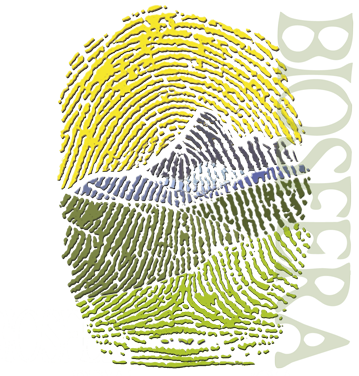

|
Reserva
de la Biosfera: |
Nuestra
Reserva de la Biosfera |
 |
|
|
El
Programa sobre el Hombre y la Biosfera (MAB), propone
una agenda de investigación interdisciplinaria
y de formación de capacidades buscando mejorar
la relación global de las personas con su medio
ambiente. Lanzado a principios de los setenta, apunta
fuertemente a las dimensiones ecológicas, sociales
y económicas de la pérdida de la biodiversidad,
así como a la reducción de dicha pérdida.
Usa la Red Mundial de Reservas de Biosfera
como vehículo para compartir conocimientos, investigación
y vigilancia, educación y formación, y
una toma de decisiones participativa |
|
|
 Reserva de
la Biosfera de las Sierras de Béjar y Francia.
Video Promocional
Reserva de
la Biosfera de las Sierras de Béjar y Francia.
Video Promocional |
|
Reservas
de Biosfera - Definición
-
Las
Reservas de Biosfera son "zonas de ecosistemas
terrestres o costeros/marinos, o una combinación
de los mismos, reconocidas como tales en un plano
internacional en el marco del Programa MAB de la
UNESCO". Constituyen un componente importante
del MAB que facilita el intercambio de experiencias
e información entre las reservas de la Red
Mundial de Reservas de Biosfera.
-
Las
Reservas de Biosfera son incluidas en la Red Mundial
mediante decisión del Consejo Internacional
de Coordinación del MAB (Artículo
5 del Marco Estatutario) con base a las propuestas
presentadas.
- Cada
diez años cada Reserva de Biosfera de la Red
Mundial es evaluada de acuerdo con la disposicón
del Artículo 9 - Revisión Periódica
- del Marco Estatutario.
|
|
Reservas
de Biosfera - En España |
- El
programa MaB, Hombre y Biosfera, de la UNESCO es,
sin duda, desde su establecimiento a principios
de los años setenta un interesante instrumento
para formular criterios y ejemplificar un nuevo
modelo de relación del hombre con la naturaleza.
Esa primera intención demostrativa ha quedado
palpablemente avalada con el paso de los años
al consolidarse políticas de uso racional
y desarrollo sostenible en las áreas protegidas.
- Un
ejemplo particular de estas intenciones y objetivos
son las Reservas de la Biosfera,
espacios singulares que, sin que ello implique necesariamente
un régimen jurídico especial, son
así reconocidas por la UNESCO como áreas
de referencia donde ejemplificar una nueva manera
de relación del hombre con la naturaleza.
En este sentido, la misión del Programa Español
"Hombre y Biosfera" es desarrollar, demostrar,
promover y presentar relaciones armoniosas entre
el hombre y el medio ambiente. A largo plazo, el
objetivo del programa es, desde la difusión,
la divulgación y la proyección exterior,
contribuir a formalizar una alianza entre administraciones,
sectores sociales, gestores de espacios y sociedad
civil, que proyecte la cooperación, la experimentación
y la investigación interdisciplinar, para
impulsar la sostenibilidad del desarrollo.
- El
funcionamiento interno del Programa MAB se centra
en el gobierno del Consejo Internacional de Coordinación
(CIC) que esta formado por representantes de 34
Países. En el caso de España, el Organismo
Autónomo Parques Nacionales ejerce las funciones
de coordinación del desarrollo del Programa
MaB (Hombre y Biosfera de la UNESCO). (Real Decreto
342/2007). estas funciones consisten en:
- Ejercer,
a través de su Presidente, la representación
institucional derivada de la ejecución
del Programa MaB, en el marco de la Comisión
Nacional Española de Cooperación
con la UNESCO y la Representación Permanente
del Reino de España ante la UNESCO
- Impulsar
y coordinar las actividades que constituyen
la contribución española al Programa
Internacional sobre Persona y la Biosfera, en
el campo de la conservación del patrimonio
natural, del desarrollo sostenible, de la formación,
y en particular de la promoción del concepto
de Reserva de la Biosfera.
- Prestar
asistencia, en colaboración con la Comisión
Nacional Española de Cooperación
con la UNESCO, a las diferentes administraciones
públicas españolas en relación
con el Programa MaB, asegurando, en estrecha
coordinación con el Ministerio de Asuntos
Exteriores y de Cooperación, y la Representación
Permanente, la participación española
en el Comité Internacional de Coordinación
del citado programa
|
|
|
Legislación
|
|
|
Documentos
|
|
|
|
|